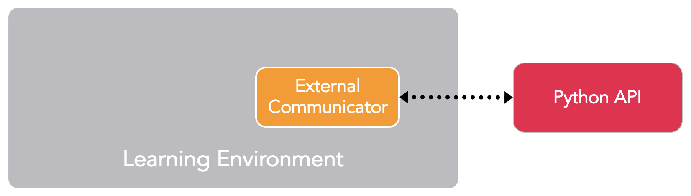
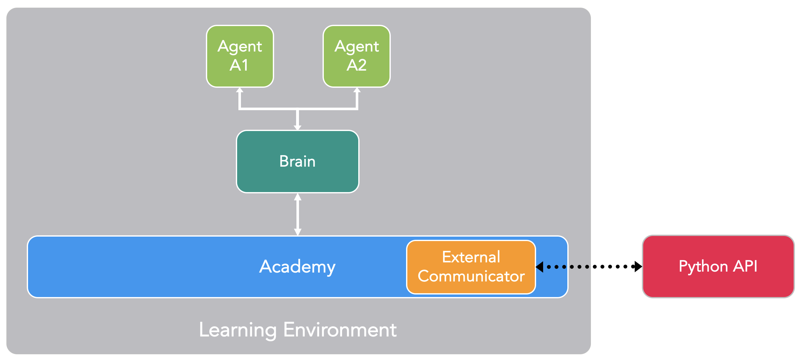
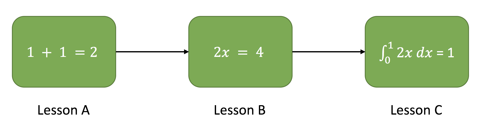

ML-Agents Overview
Unity Machine Learning Agents (ML-Agents) is an open-source Unity plugin that enables games and simulations to serve as environments for training intelligent agents. Agents can be trained using reinforcement learning, imitation learning, neuroevolution, or other machine learning methods through a simple-to-use Python API. We also provide implementations (based on TensorFlow) of state-of-the-art algorithms to enable game developers and hobbyists to easily train intelligent agents for 2D, 3D and VR/AR games. These trained agents can be used for multiple purposes, including controlling NPC behavior (in a variety of settings such as multi-agent and adversarial), automated testing of game builds and evaluating different game design decisions pre-release. ML-Agents is mutually beneficial for both game developers and AI researchers as it provides a central platform where advances in AI can be evaluated on Unity’s rich environments and then made accessible to the wider research and game developer communities.
Depending on your background (i.e. researcher, game developer, hobbyist), you may have very different questions on your mind at the moment. To make your transition to ML-Agents easier, we provide several background pages that include overviews and helpful resources on the Unity Engine, machine learning and TensorFlow. We strongly recommend browsing the relevant background pages if you're not familiar with a Unity scene, basic machine learning concepts or have not previously heard of TensorFlow.
The remainder of this page contains a deep dive into ML-Agents, its key components, different training modes and scenarios. By the end of it, you should have a good sense of what ML-Agents allows you to do. The subsequent documentation pages provide examples of how to use ML-Agents.
Running Example: Training NPC Behaviors
To help explain the material and terminology in this page, we'll use a hypothetical, running example throughout. We will explore the problem of training the behavior of a non-playable character (NPC) in a game. (An NPC is a game character that is never controlled by a human player and its behavior is pre-defined by the game developer.) More specifically, let's assume we're building a multi-player, war-themed game in which players control the soldiers. In this game, we have a single NPC who serves as a medic, finding and reviving wounded players. Lastly, let us assume that there are two teams, each with five players and one NPC medic.
The behavior of a medic is quite complex. It first needs to avoid getting injured, which requires detecting when it is in danger and moving to a safe location. Second, it needs to be aware of which of its team members are injured and require assistance. In the case of multiple injuries, it needs to assess the degree of injury and decide who to help first. Lastly, a good medic will always place itself in a position where it can quickly help its team members. Factoring in all of these traits means that at every instance, the medic needs to measure several attributes of the environment (e.g. position of team members, position of enemies, which of its team members are injured and to what degree) and then decide on an action (e.g. hide from enemy fire, move to help one of its members). Given the large number of settings of the environment and the large number of actions that the medic can take, defining and implementing such complex behaviors by hand is challenging and prone to errors.
With ML-Agents, it is possible to train the behaviors of such NPCs (called agents) using a variety of methods. The basic idea is quite simple. We need to define three entities at every moment of the game (called environment):
- Observations - what the medic perceives about the environment. Observations can be numeric and/or visual. Numeric observations measure attributes of the environment from the point of view of the agent. For our medic this would be attributes of the battlefield that are visible to it. Observations can either be discrete or continuous depending on the complexity of the game and agent. For most interesting environments, an agent will require several continuous numeric observations, while for simple environments with a small number of unique configurations, a discrete observation will suffice. Visual observations, on the other hand, are images generated from the cameras attached to the agent and represent what the agent is seeing at that point in time. It is common to confuse an agent's observation with the environment (or game) state. The environment state represents information about the entire scene containing all the game characters. The agents observation, however, only contains information that the agent is aware of and is typically a subset of the environment state. For example, the medic observation cannot include information about an enemy in hiding that the medic is unaware of.
- Actions - what actions the medic can take. Similar to observations, actions can either be continuous or discrete depending on the complexity of the environment and agent. In the case of the medic, if the environment is a simple grid world where only their location matters, then a discrete action taking on one of four values (north, south, east, west) suffices. However, if the environment is more complex and the medic can move freely then using two continuous actions (one for direction and another for speed) is more appropriate.
- Reward signals - a scalar value indicating how well the medic is doing. Note that the reward signal need not be provided at every moment, but only when the medic performs an action that is good or bad. For example, it can receive a large negative reward if it dies, a modest positive reward whenever it revives a wounded team member, and a modest negative reward when a wounded team member dies due to lack of assistance. Note that the reward signal is how the objectives of the task are communicated to the agent, so they need to be set up in a manner where maximizing reward generates the desired optimal behavior.
After defining these three entities (the building blocks of a reinforcement learning task), we can now train the medic's behavior. This is achieved by simulating the environment for many trials where the medic, over time, learns what is the optimal action to take for every observation it measures by maximizing its future reward. The key is that by learning the actions that maximize its reward, the medic is learning the behaviors that make it a good medic (i.e. one who saves the most number of lives). In reinforcement learning terminology, the behavior that is learned is called a policy, which is essentially a (optimal) mapping from observations to actions. Note that the process of learning a policy through running simulations is called the training phase, while playing the game with an NPC that is using its learned policy is called the inference phase.
ML-Agents provides all the necessary tools for using Unity as the simulation engine for learning the policies of different objects in a Unity environment. In the next few sections, we discuss how ML-Agents achieves this and what features it provides.
Key Components
ML-Agents is a Unity plugin that contains three high-level components:
- Learning Environment - which contains the Unity scene and all the game characters.
- Python API - which contains all the machine learning algorithms that are used for training (learning a behavior or policy). Note that, unlike the Learning Environment, the Python API is not part of Unity, but lives outside and communicates with Unity through the External Communicator.
- External Communicator - which connects the Learning Environment with the Python API. It lives within the Learning Environment.

Simplified block diagram of ML-Agents.
The Learning Environment contains three additional components that help organize the Unity scene:
- Agents - which is attached to a Unity GameObject (any character within a scene) and handles generating its observations, performing the actions it receives and assigning a reward (positive / negative) when appropriate. Each Agent is linked to exactly one Brain.
- Brains - which encapsulates the logic for making decisions for the Agent. In essence, the Brain is what holds on to the policy for each Agent and determines which actions the Agent should take at each instance. More specifically, it is the component that receives the observations and rewards from the Agent and returns an action.
- Academy - which orchestrates the observation and decision making process. Within the Academy, several environment-wide parameters such as the rendering quality and the speed at which the environment is run can be specified. The External Communicator lives within the Academy.
Every Learning Environment will always have one global Academy and one Agent for every character in the scene. While each Agent must be linked to a Brain, it is possible for Agents that have similar observations and actions to be linked to the same Brain. In our sample game, we have two teams each with their own medic. Thus we will have two Agents in our Learning Environment, one for each medic, but both of these medics can be linked to the same Brain. Note that these two medics are linked to the same Brain because their space of observations and actions are similar. This does not mean that at each instance they will have identical observation and action values. In other words, the Brain defines the space of all possible observations and actions, while the Agents connected to it (in this case the medics) can each have their own, unique observation and action values. If we expanded our game to include tank driver NPCs, then the Agent attached to those characters cannot share a Brain with the Agent linked to the medics (medics and drivers have different actions).

Example block diagram of ML-Agents for our sample game.
We have yet to discuss how ML-Agents trains behaviors, and what role the Python API and External Communicator play. Before we dive into those details, let's summarize the earlier components. Each character is attached to an Agent, and each Agent is linked to a Brain. The Brain receives observations and rewards from the Agent and returns actions. The Academy ensures that all the Agents and Brains are in sync in addition to controlling environment-wide settings. So how does the Brain control what the Agent does?
In practice, we have four different types of Brains, which enable a wide range of training and inference scenarios:
- External - where decisions are made using the Python API. Here, the observations and rewards collected by the Brain are forwarded to the Python API through the External Communicator. The Python API then returns the corresponding action that needs to be taken by the Agent.
- Internal - where decisions are made using an embedded TensorFlow model. The embedded TensorFlow model represents a learned policy and the Brain directly uses this model to determine the action for each Agent.
- Player - where decisions are made using real input from a keyboard or controller. Here, a human player is controlling the Agent and the observations and rewards collected by the Brain are not used to control the Agent.
- Heuristic - where decisions are made using hard-coded behavior. This resembles how most character behaviors are currently defined and can be helpful for debugging or comparing how an Agent with hard-coded rules compares to an Agent whose behavior has been trained. In our example, once we have trained a Brain for the medics we could assign a medic on one team to the trained Brain and assign the medic on the other team a Heuristic Brain with hard-coded behaviors. We can then evaluate which medic is more effective.
As currently described, it may seem that the External Communicator and Python API are only leveraged by the External Brain. This is not true. It is possible to configure the Internal, Player and Heuristic Brains to also send the observations, rewards and actions to the Python API through the External Communicator (a feature called broadcasting). As we will see shortly, this enables additional training modes.

An example of how a scene containing multiple Agents and Brains might be configured.
Training Modes
Given the flexibility of ML-Agents, there are a few ways in which training and inference can proceed.
Built-in Training and Inference
As mentioned previously, ML-Agents ships with several implementations of state-of-the-art algorithms for training intelligent agents. In this mode, the Brain type is set to External during training and Internal during inference. More specifically, during training, all the medics in the scene send their observations to the Python API through the External Communicator (this is the behavior with an External Brain). The Python API processes these observations and sends back actions for each medic to take. During training these actions are mostly exploratory to help the Python API learn the best policy for each medic. Once training concludes, the learned policy for each medic can be exported. Given that all our implementations are based on TensorFlow, the learned policy is just a TensorFlow model file. Then during the inference phase, we switch the Brain type to Internal and include the TensorFlow model generated from the training phase. Now during the inference phase, the medics still continue to generate their observations, but instead of being sent to the Python API, they will be fed into their (internal, embedded) model to generate the optimal action for each medic to take at every point in time.
To summarize: our built-in implementations are based on TensorFlow, thus, during training the Python API uses the observations it receives to learn a TensorFlow model. This model is then embedded within the Internal Brain during inference to generate the optimal actions for all Agents linked to that Brain. Note that our Internal Brain is currently experimental as it is limited to TensorFlow models and leverages the third-party TensorFlowSharp library.
The Getting Started with the 3D Balance Ball Example tutorial covers this training mode with the 3D Balance Ball sample environment.
Custom Training and Inference
In the previous mode, the External Brain type was used for training to generate a TensorFlow model that the Internal Brain type can understand and use. However, any user of ML-Agents can leverage their own algorithms for both training and inference. In this case, the Brain type would be set to External for both training and inferences phases and the behaviors of all the Agents in the scene will be controlled within Python.
We do not currently have a tutorial highlighting this mode, but you can learn more about the Python API here.
Curriculum Learning
This mode is an extension of Built-in Training and Inference, and is particularly helpful when training intricate behaviors for complex environments. Curriculum learning is a way of training a machine learning model where more difficult aspects of a problem are gradually introduced in such a way that the model is always optimally challenged. This idea has been around for a long time, and it is how we humans typically learn. If you imagine any childhood primary school education, there is an ordering of classes and topics. Arithmetic is taught before algebra, for example. Likewise, algebra is taught before calculus. The skills and knowledge learned in the earlier subjects provide a scaffolding for later lessons. The same principle can be applied to machine learning, where training on easier tasks can provide a scaffolding for harder tasks in the future.

Example of a mathematics curriculum. Lessons progress from simpler topics to more complex ones, with each building on the last.
When we think about how reinforcement learning actually works, the learning signal is reward received occasionally throughout training. The starting point when training an agent to accomplish this task will be a random policy. That starting policy will have the agent running in circles, and will likely never, or very rarely achieve the reward for complex environments. Thus by simplifying the environment at the beginning of training, we allow the agent to quickly update the random policy to a more meaningful one that is successively improved as the environment gradually increases in complexity. In our example, we can imagine first training the medic when each team only contains one player, and then iteratively increasing the number of players (i.e. the environment complexity). ML-Agents supports setting custom environment parameters within the Academy. This allows elements of the environment related to difficulty or complexity to be dynamically adjusted based on training progress.
The Training with Curriculum Learning tutorial covers this training mode with the Wall Area sample environment.
Imitation Learning
It is often more intuitive to simply demonstrate the behavior we want an agent to perform, rather than attempting to have it learn via trial-and-error methods. For example, instead of training the medic by setting up its reward function, this mode allows providing real examples from a game controller on how the medic should behave. More specifically, in this mode, the Brain type during training is set to Player and all the actions performed with the controller (in addition to the agent observations) will be recorded and sent to the Python API. The imitation learning algorithm will then use these pairs of observations and actions from the human player to learn a policy.
The Training with Imitation Learning tutorial covers this training mode with the Banana Collector sample environment.
Flexible Training Scenarios
While the discussion so-far has mostly focused on training a single agent, with ML-Agents, several training scenarios are possible. We are excited to see what kinds of novel and fun environments the community creates. For those new to training intelligent agents, below are a few examples that can serve as inspiration:
- Single-Agent. A single Agent linked to a single Brain, with its own reward signal. The traditional way of training an agent. An example is any single-player game, such as Chicken. Video Link.
- Simultaneous Single-Agent. Multiple independent Agents with independent reward signals linked to a single Brain. A parallelized version of the traditional training scenario, which can speed-up and stabilize the training process. Helpful when you have multiple versions of the same character in an environment who should learn similar behaviors. An example might be training a dozen robot-arms to each open a door simultaneously. Video Link.
- Adversarial Self-Play. Two interacting Agents with inverse reward signals linked to a single Brain. In two-player games, adversarial self-play can allow an agent to become increasingly more skilled, while always having the perfectly matched opponent: itself. This was the strategy employed when training AlphaGo, and more recently used by OpenAI to train a human-beating 1-vs-1 Dota 2 agent.
- Cooperative Multi-Agent. Multiple interacting Agents with a shared reward signal linked to either a single or multiple different Brains. In this scenario, all agents must work together to accomplish a task that cannot be done alone. Examples include environments where each agent only has access to partial information, which needs to be shared in order to accomplish the task or collaboratively solve a puzzle.
- Competitive Multi-Agent. Multiple interacting Agents with inverse reward signals linked to either a single or multiple different Brains. In this scenario, agents must compete with one another to either win a competition, or obtain some limited set of resources. All team sports fall into this scenario.
- Ecosystem. Multiple interacting Agents with independent reward signals linked to either a single or multiple different Brains. This scenario can be thought of as creating a small world in which animals with different goals all interact, such as a savanna in which there might be zebras, elephants and giraffes, or an autonomous driving simulation within an urban environment.
Additional Features
Beyond the flexible training scenarios available, ML-Agents includes additional features which improve the flexibility and interpretability of the training process.
On Demand Decision Making - With ML-Agents it is possible to have agents request decisions only when needed as opposed to requesting decisions at every step of the environment. This enables training of turn based games, games where agents must react to events or games where agents can take actions of variable duration. Switching between decision taking at every step and on-demand-decision is one button click away. You can learn more about the on-demand-decision feature here.
Memory-enhanced Agents - In some scenarios, agents must learn to remember the past in order to take the best decision. When an agent only has partial observability of the environment, keeping track of past observations can help the agent learn. We provide an implementation of Long Short-term Memory (LSTM) in our trainers that enable the agent to store memories to be used in future steps. You can learn more about enabling LSTM during training here.
Monitoring Agent’s Decision Making - Since communication in ML-Agents is a two-way street, we provide an agent Monitor class in Unity which can display aspects of the trained agent, such as the agents perception on how well it is doing (called value estimates) within the Unity environment itself. By leveraging Unity as a visualization tool and providing these outputs in real-time, researchers and developers can more easily debug an agent’s behavior. You can learn more about using the Monitor class here.
Complex Visual Observations - Unlike other platforms, where the agent’s observation might be limited to a single vector or image, ML-Agents allows multiple cameras to be used for observations per agent. This enables agents to learn to integrate information from multiple visual streams. This can be helpful in several scenarios such as training a self-driving car which requires multiple cameras with different viewpoints, or a navigational agent which might need to integrate aerial and first-person visuals. You can learn more about adding visual observations to an agent here.
Broadcasting - As discussed earlier, an External Brain sends the observations for all its Agents to the Python API by default. This is helpful for training or inference. Broadcasting is a feature which can be enabled for the other three modes (Player, Internal, Heuristic) where the Agent observations and actions are also sent to the Python API (despite the fact that the Agent is not controlled by the Python API). This feature is leveraged by Imitation Learning, where the observations and actions for a Player Brain are used to learn the policies of an agent through demonstration. However, this could also be helpful for the Heuristic and Internal Brains, particularly when debugging agent behaviors. You can learn more about using the broadcasting feature here.
Docker Set-up (Experimental) - To facilitate setting up ML-Agents without installing Python or TensorFlow directly, we provide a guide on how to create and run a Docker container.
Cloud Training on AWS - To facilitate using ML-Agents on Amazon Web Services (AWS) machines, we provide a guide on how to set-up EC2 instances in addition to a public pre-configured Amazon Machine Image (AMI).
Summary and Next Steps
To briefly summarize: ML-Agents enables games and simulations built in Unity to serve as the platform for training intelligent agents. It is designed to enable a large variety of training modes and scenarios and comes packed with several features to enable researchers and developers to leverage (and enhance) machine learning within Unity.
To help you use ML-Agents, we've created several in-depth tutorials for installing ML-Agents, getting started with the 3D Balance Ball environment (one of our many sample environments) and making your own environment.